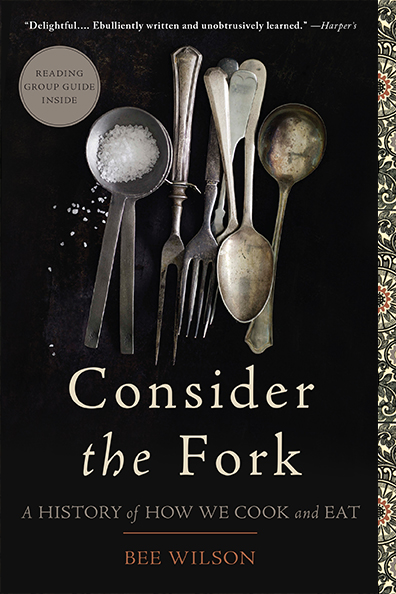

I was pretty amused when I read, in Bee Wilson’s book Consider the Fork, that “the Victorians have a reputation for having ruined British cooking.” It’s funny considering my experience with British food, which more often than not consists of various plainly-seasoned brown food items arranged on a plate with brown sauce poured over the top. Occasionally, there will be the side of peas, but these are more often than not, mushy— which brings me to vegetables.
Wilson states that Victorian and Regency recipes dictate vegetable boiling times much longer than we might boil them in the modern day— Some recipes call for twenty minutes of boiling for broccoli, fifteen to eighteen minutes for asparagus, and forty-five minutes to an hour for carrots. For those not familiar with boiling vegetables, it generally takes around the modern cook four minutes to boil broccoli until tender and around six minutes for carrots. As you can tell, sixty minutes is much more than six.
There are various reasons why the Victorians “overcooked” their vegetables, Wilson continues on to explain. First, it might have been the case that, in seeking a perfect texture, food writers overthought the cooking time of their vegetables. Raw vegetables were never an option, as they were seen as harmful to the body. William Kitchiner, a Victorian food writer, wrote that “great care must be taken to watch the exact time of their becoming tender” when boiling asparagus, and that overboiling the asparagus by even a minute will destroy the asparagus’ “true flavor and color.” On the same breath, he recommended that asparagus should be boiled for twenty to thirty minutes, which sounds contradictory, but Wilson clarifies that Kitchiner directs readers to tie asparagus into a bundle before boiling, which would make the process take longer than boiling separated stalks.
There was also some discussion over the quickness and temperature of a boil; though some thought a violent boil would cause faster cooking times, it was proven that a fast boil would not cook food any quicker than a slow boil, as the water remains at the same boiling temperature despite the speed. But what perhaps makes most sense in explaining the lengthy cooking times for vegetables instructed by Victorian writers is a difference between modern produce and Victorian produce.
Through selective breeding and genetic modification, current produce has been evolved to become softer; Victorian produce would have been tougher, which explains the longer cooking times. In designing their recipes, the Victorians took into account all the above factors— and at face value, twenty minutes of boiling for asparagus is insane to modern readers. But given the circumstances surrounding asparagus and cookery at the time, it makes perfect sense to use Kitchiner’s method.
It’s a form of elitism that causes these fast conclusions— The view that our predecessors have antiquated ideas of how to go about different tasks is just a part of learning about history. But, like us, the Victorians came up with the best solution for the resources available in their own time.